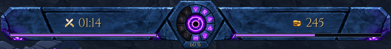
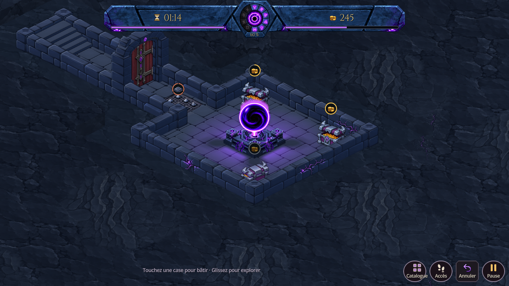
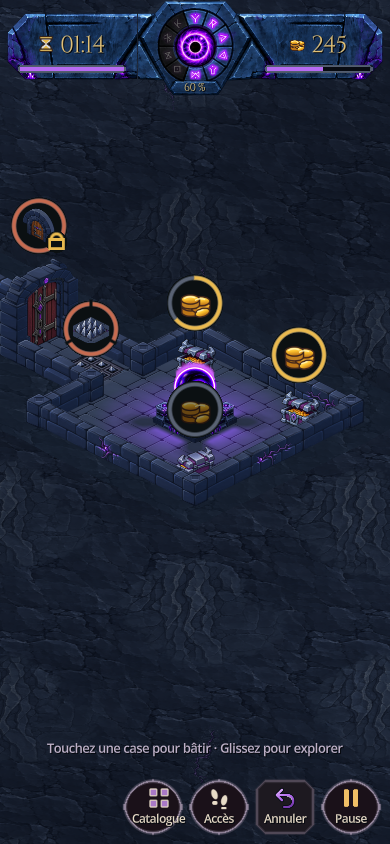
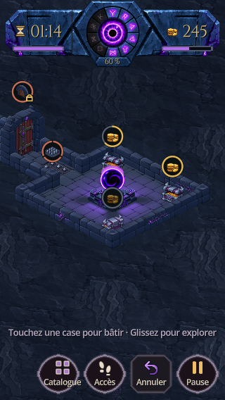
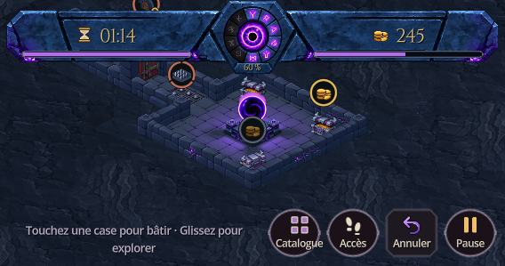
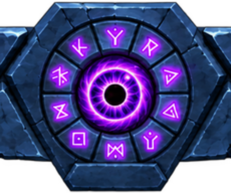
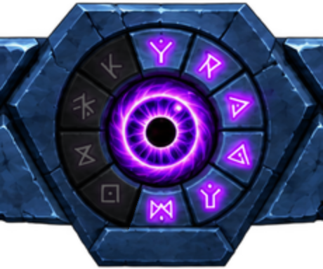
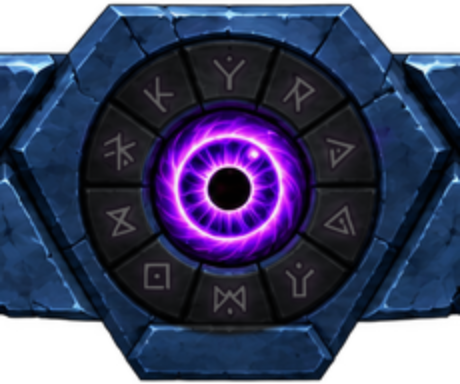

Voir la version suivante : chiffres clairs et icônes peintes du maître du donjon.
La pierre bleutée, la silhouette angulaire et les dix runes sont conservées. Une rune correspond à une tranche de 10 % de vie du cœur, en commençant en haut puis dans le sens des aiguilles d’une montre. L’œil conserve ses proportions lorsque les ailes se resserrent en portrait.
Les titres ont été retirés : un sablier accompagne le compte à rebours et le tas de pièces indique l’or. Les valeurs sont centrées entre la fissure supérieure et la rainure des jauges, désormais violettes. Pendant un raid, les épées croisées remplacent le sablier :








Ces agrandissements proviennent du moteur. Le panneau de pierre et la pupille restent indépendants de l’extinction des runes. Le pourcentage est affiché par le jeu sur la lèvre de pierre.
Après retrait des titres : 856 contrôles ciblés et captures actualisées, aucun échec. L’intégration C avait également passé 40 cas de confinement des jauges, 227 contrôles de rotation, les tests d’interaction mobile et une revue de code indépendante. Captures sur ordinateur ; pas de nouvelle validation sur téléphone ni d’APK.
Notes et reproduction · Contrôles ciblés · Découpes et budget · Design approuvé